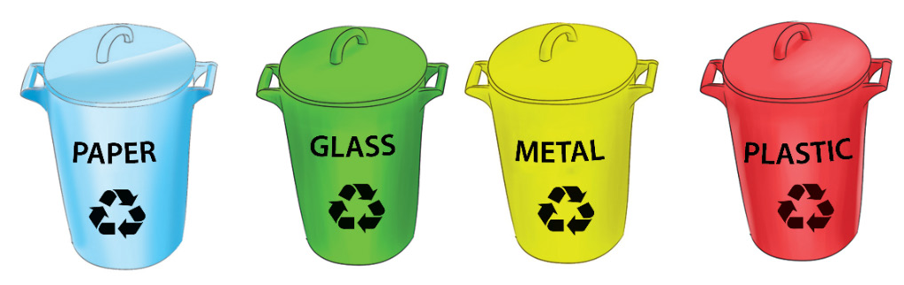

Different techniques of collecting and disposing waste from fine art activities
Occupational health should aim at the promotion and maintenance of the highest degree of physical, mental and social well-being of artists. Wastes are slowly generated as the artist works day to day. The more they work the more waste is produced. It is important to have proper methods of collecting them before disposing. Waste materials need to be collected separately according to their nature. For example, solvents, linseed oil, and oil-based paint. Containers must remain closed when they are not in use to keep the area safe and clean. The collected waste can be processed and given a value to be used again instead of being disposed of or processed to be disposed of.
Occupational health should aim to promote and sustain the highest level of physical, mental, and social well-being of the artists. The waste increases with time as the artist works nonstop. As they work harder, more waste is produced. Appropriate collection methods must be employed before disposing them of. Waste items from art working areas, such as solvents, linseed oil, used papers, oil-based paint, and other materials associated with them, must be collected separately due to their nature. To keep the area clean and safe, containers must be closed while they are not in use. The waste that has been gathered can be processed and given valuable artwork rather than being thrown away so that it might be used again. Here are few techniques of managing wastes.
Recycling
Recycling is the process of turning trash into new products and materials. This process can lower the use of new raw materials and stop the waste of products that could be utilised. The process can involve gathering wastes and sorting them based on the nature of the products. As soon as the substance is placed in the waste container, the container should be labelled according to the types of waste. Figure 6.8 shows examples of sorted wastes for recycling.
